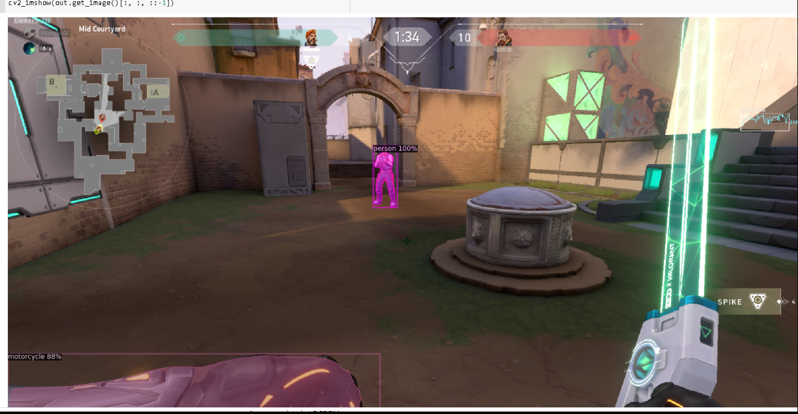
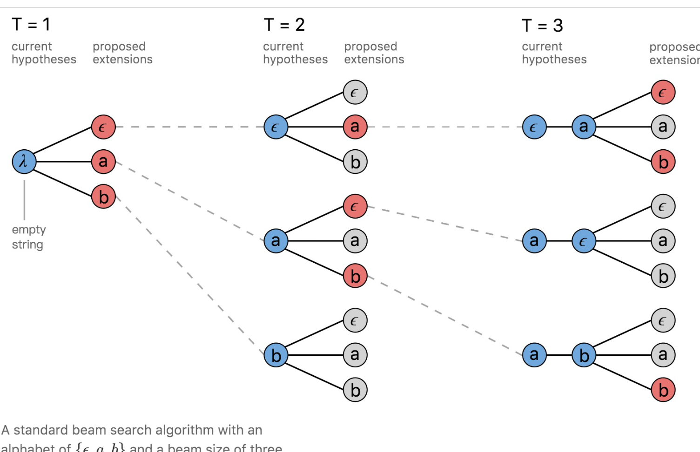
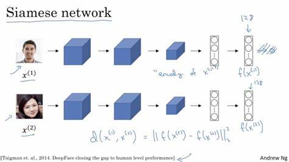
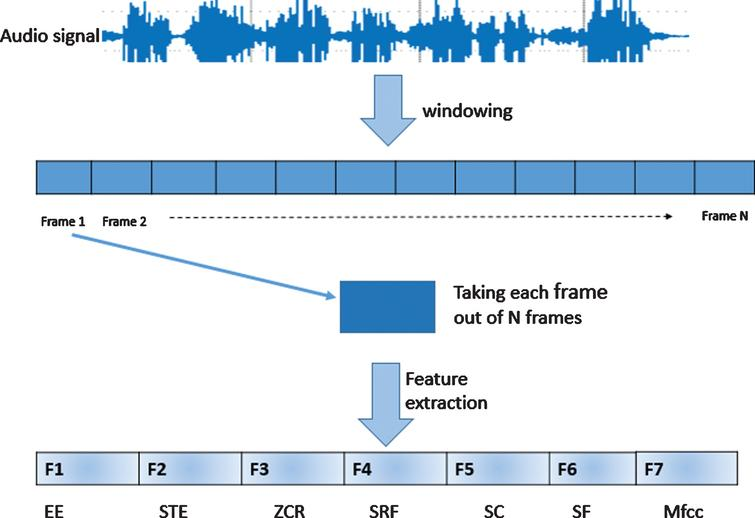
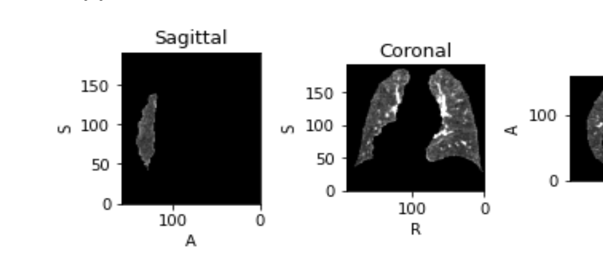
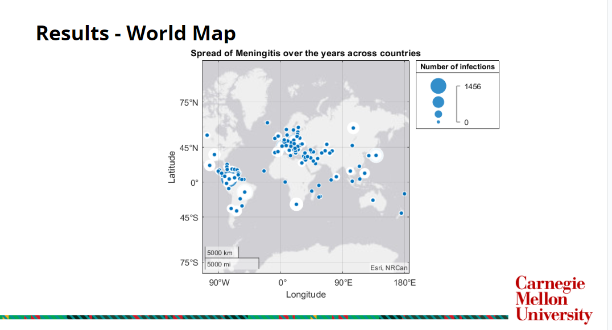
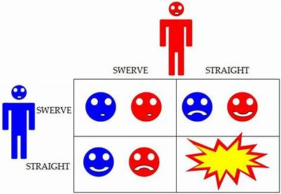
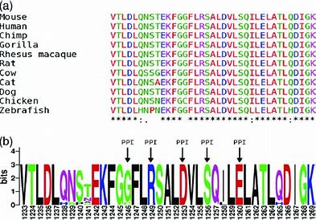

|

|
Few-Shot Object Detection in Valorant-A First Person Game
Team : Adrita Das, Idris Wardere, Du Huang, Alice
Feb 2023
In this project, we seek to apply few-shot object detection methods in Valorant, a first-person game set in a three dimensional environment
developed and published by Riot Games.
|

|
Speech Recognition by Predicting Phonemes
Kaggle Competition-11785 CMU
Mar 2023
Implementing RNNs and the dynamic programming algorithm, Connectionist Temporal Classification, to generate such labels. Kaggle Link.
|

|
Face Classification and Verification Using CNN
Kaggle Competition 11-785 CMU
Feb 2023
In this kaggle challenge, worked on pattern recognition problems that require position invariance. Specifically on the problem of
recognizing or verifying faces in images. Kaggle Link.
|

|
Frame Level Classification of Speech
Kaggle Competition 11-785 CMU
Jan 2023
In this kaggle challenge, applied the knowledge of feedforward neural networks and applied it to a more useful task than recognizing
handwritten digits: speech recognition. Was provided a dataset of audio recordings (utterances) and their phoneme state (sub phoneme) labels.
The data provided, comes from articles published in the Wall Street Journal (WSJ) that are read aloud and labeled using the original text.
Kaggle Link.
|

|
Image Registration in Medical Imaging with CNN
42640 - Image Based Computational Modelling and Analysis Project
Nov 2022
Implemented a keypoint-based geometric network for the registration of medical images with dense deformations. Project Report.
|

|
Disease Modelling and Analysis of Meningitis
42675 - Fundamentals of Computational Biomdeical Engineering Project
Nov 2022
Presented and implemented a summary of different computational approaches aimed at describing and modeling the effect of different factors on mortality rate of meningitis around the world.
Project Slides.
|

|
Game Theory with Python
BIT 4004 - Neurobiology Project
Nov 2020
Implemented several game theory models to explain the neuroscience of decision making. Simulated game theory models such as Axelrod and Chicken game in python.
Project Slides.
|

|
Phylogenetic Relationship of Conserved and Non-Conserved Proteins Accross Model Organisms
BIT 2009 - Protein Engineering and Design
Nov 2020
This project was designed to provide the idea on how the sequence of proteins and structures have changed overtime and adapted to the environment.
|